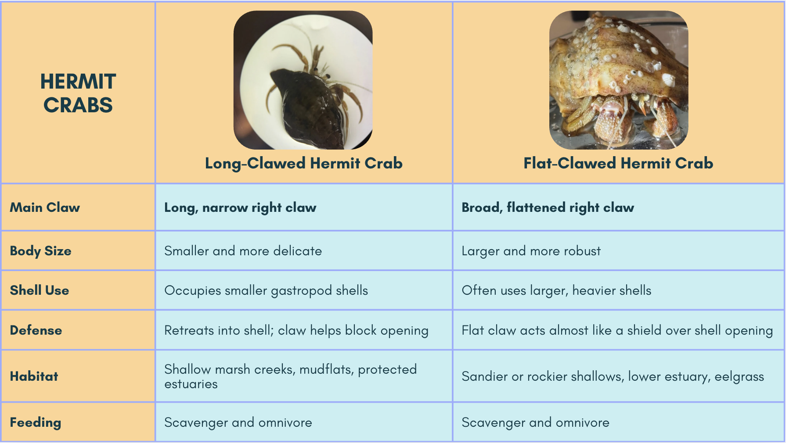
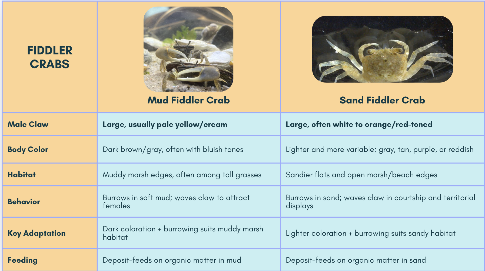
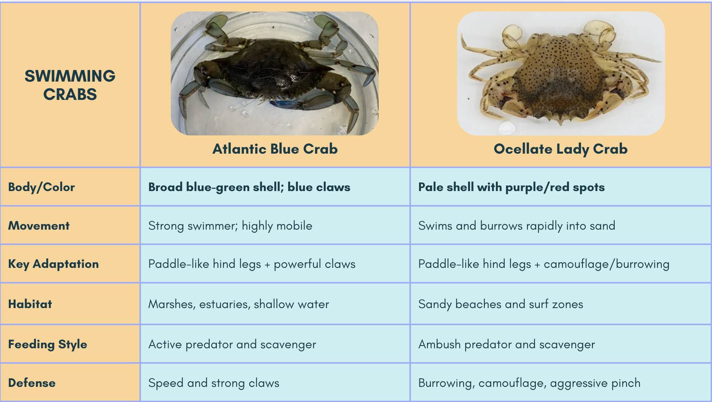
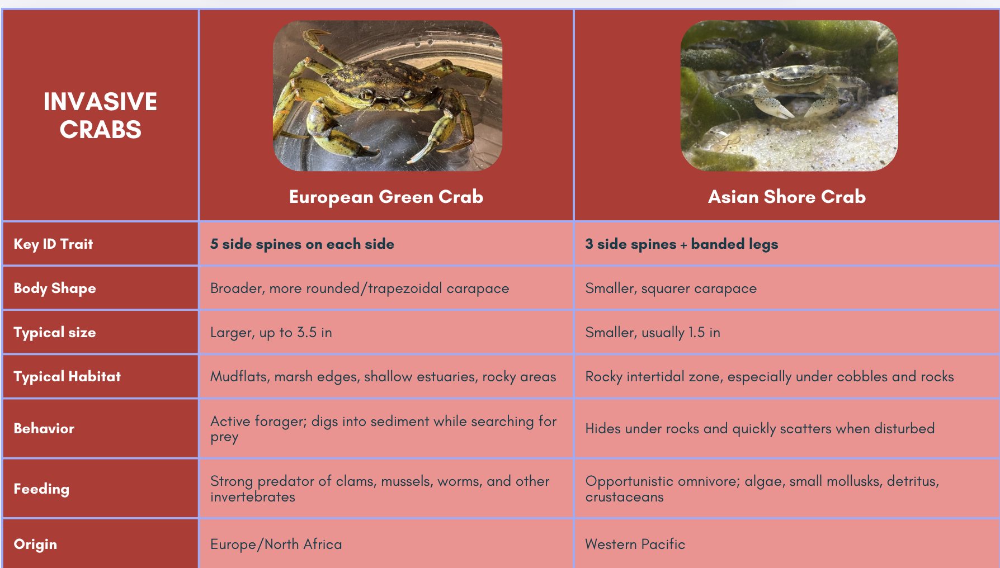

Loading the verbatim project conclusions…
Original comparative trait plates, consensus lengths, collection details, mismatch notes, analyses, alignments, and phylogenetic trees from the project materials.
Four original project plates comparing visible traits, habitat, behavior, feeding, and defensive adaptations.




14 SSAJ specimens · Marsh Grass Shrimp outgroup
Loading the verbatim project conclusions…
Loading the original comparison figures…